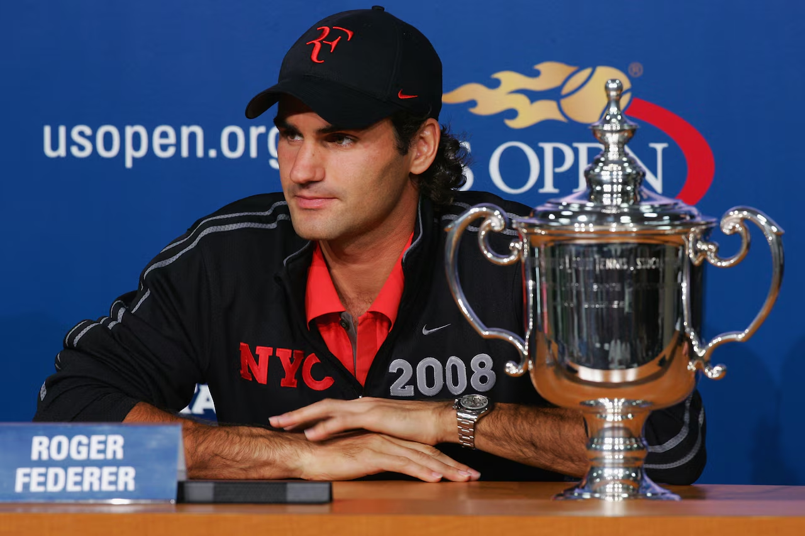
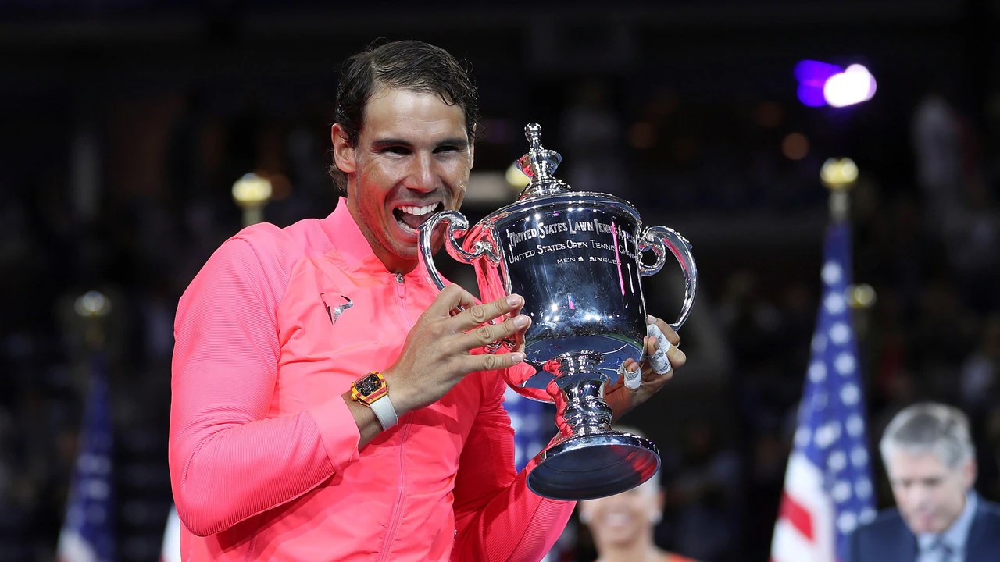
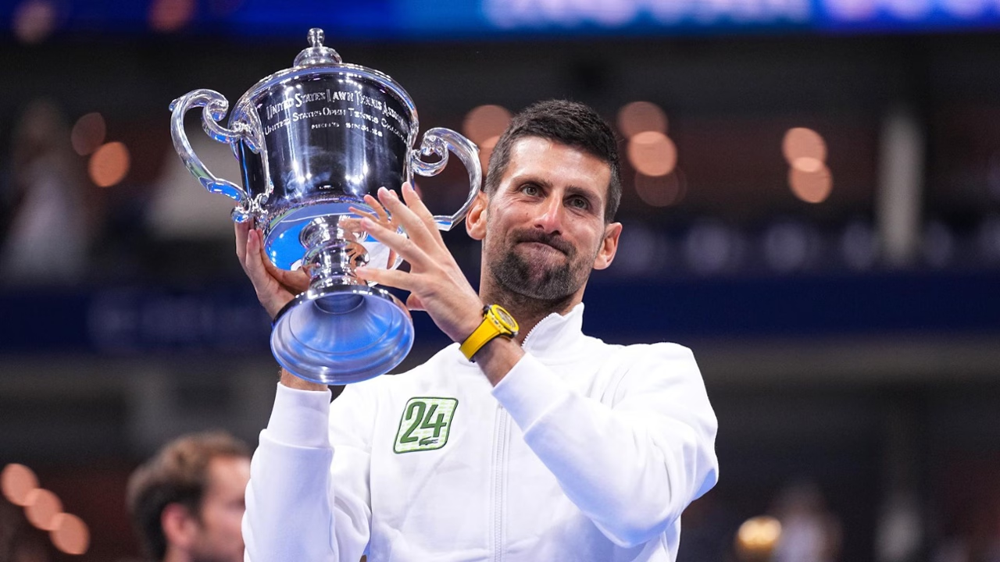

The US Open is one of the four Grand Slam tennis tournaments, held annually in New York City.
Enter your age to access the content:
Introduction to Tennis
Tennis is a racket sport played between two players (singles) or two teams of two players
each (doubles). Players use a strung racket to strike a hollow rubber ball covered with felt
over or around a net into the opponent's court. The sport is governed by the International
Tennis Federation (ITF) and is one of the most popular sports in the world.
Tennis demands a combination of speed, endurance, coordination, and mental strength.
Whether played on clay, grass, or hard courts, the game rewards players who can adapt
their game to different conditions and opponents.
The Grand Slam Tournaments
The four Grand Slam tournaments are the most prestigious events in professional tennis.
They are held annually and offer the most ranking points, prize money, and public attention.
Australian Open — Held in January in Melbourne, Australia. Played on hard courts.
French Open (Roland Garros) — Held in May–June in Paris, France. Played on clay courts.
Wimbledon — Held in June–July in London, England. Played on grass courts.
US Open — Held in August–September in New York City, USA. Played on hard courts.
Winning all four Grand Slams in a single calendar year is called a "Grand Slam" — one of
the rarest achievements in all of sports. Only a handful of players in history have come
close to this accomplishment.
Tennis Legends

Roger Federer
Grand Slams: 20
Roger Federer is widely regarded as one of the most elegant players in tennis history.
Known for his fluid technique, precise footwork, and calm temperament, Federer dominated
the sport throughout the 2000s and continued competing at the highest level well into
the 2010s. His Wimbledon record and rivalry with Nadal and Djokovic are central chapters
in modern tennis history.

Rafael Nadal
Grand Slams: 22
Rafael Nadal is renowned for his relentless intensity and exceptional clay-court dominance.
His record 14 French Open titles stands as one of the most remarkable achievements in any
sport. Known for extreme topspin, physical resilience, and emotional determination,
Nadal became an inspiration both on and off the court.

Novak Djokovic
Grand Slams: 24
Novak Djokovic holds the record for the most Grand Slam singles titles in men's tennis.
His exceptional flexibility, return of serve, and mental resilience have made him one
of the most consistent champions in the history of the sport. Djokovic has won titles
on all three Grand Slam surfaces and continues to compete at the highest level.
About the US Open
The US Open is the final Grand Slam of the tennis calendar year, held at the USTA Billie
Jean King National Tennis Center in Flushing, New York. It is played on hard courts and
known for its electric atmosphere, with the noise of the New York crowd creating one of
the most intense environments in professional tennis.
The US Open has a long history dating back to 1881, making it one of the oldest tennis
tournaments in the world. It attracts the biggest names in tennis and consistently
produces memorable matches and breakthrough performances.
Why Tennis Matters
Tennis is a sport that combines individual skill with mental strength, physical endurance,
and tactical awareness. Unlike team sports, every point in tennis is decided solely by
the players on the court, making it a uniquely personal competition.
From junior clubs to Grand Slam stadiums, tennis brings people together across ages and
backgrounds. It is a sport that rewards lifelong learning and continues to inspire
players and fans around the world.